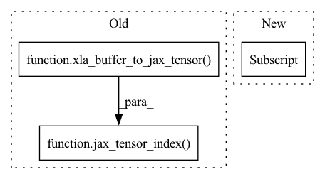

Pattern ID :4947
Before Change
"specs.")
start_indices = tuple(o.start for o in offset)
slice_sizes = tuple(o.stop - o.start for o in offset)
src_buffer = jax_tensor_index(
xla_buffer_to_jax_tensor( worker.buffers[uuid]) , start_indices,
slice_sizes)
to_send = jax_tensor_to_cupy(src_buffer)
col.send_multigpu(to_send, dst_rank, dst_gpu_idx, group_name)
After Change
dst_gpu_idx: the gpu index on the destination rank.
group_name: collective group name
buffer = worker.buffers[uuid][device_id]
tensor_shape = buffer.shape
if is_continuous_subset(offset, tensor_shape):
// fast path, two cases: (1) same shape, (2) continuous subset.
slice_shape = tuple(ind.stop - ind.start for ind in offset)In pattern: SUPERPATTERN
Frequency: 4
Non-data size: 3
Instances Fragment ID: 17384627
Project Name: alpa-projects/alpa
Commit Name: 6e9f57d11a441dee658e74b4013b88607fb0a1f1
Time: 2022-06-30
Author: zhuangyh@sjtu.edu.cn
File Name: alpa/collective/worker_nccl_util_cupy.py
M Class Name: AnonimousClass
N Class Name: AnonimousClass
M Method Name: send_tile(7)
N Method Name: send_tile(6)
M Parent Class:
N Parent Class:
M File Name: alpa/collective/worker_nccl_util_cupy.py
N File Name: alpa/collective/worker_nccl_util_cupy.py
M Start Line: 39
M End Line: 62
N Start Line: 27
N End Line: 63
Before Change
tmp = None
if global_rank == 0:
start_indices = tuple(o.start for o in tensor_slice)
tmp = jax_tensor_index(
xla_buffer_to_jax_tensor( worker.buffers[uuid]) ,
start_indices, slice_shape)
tmp = jax_tensor_to_cupy(tmp)
else:
tmp = device_put(
jnp.ones(slice_shape, dtype=worker.buffers[uuid].dtype),After Change
new_buffer = jax_tensor_to_xla_buffer(new_buffer)
if is_bool:
new_buffer = _uint8_to_bool(new_buffer)
worker.buffers[uuid][device_id] = new_buffer
init_local_comm = cupy.cuda.nccl.NcclCommunicator.initAll Fragment ID: 17384629
Project Name: alpa-projects/alpa
Commit Name: 6e9f57d11a441dee658e74b4013b88607fb0a1f1
Time: 2022-06-30
Author: zhuangyh@sjtu.edu.cn
File Name: alpa/collective/worker_nccl_util_cupy.py
M Class Name: AnonimousClass
N Class Name: AnonimousClass
M Method Name: broadcast(8)
N Method Name: broadcast(8)
M Parent Class:
N Parent Class:
M File Name: alpa/collective/worker_nccl_util_cupy.py
N File Name: alpa/collective/worker_nccl_util_cupy.py
M Start Line: 164
M End Line: 218
N Start Line: 163
N End Line: 215
Before Change
tmp = None
if global_rank == 0:
start_indices = tuple(o.start for o in tensor_slice)
tmp = jax_tensor_index(
xla_buffer_to_jax_tensor( worker.buffers[uuid]) ,
start_indices, slice_shape)
else:
tmp = device_put(
jnp.ones(slice_shape, dtype=worker.buffers[uuid].dtype),
worker.local_devices[device_id])After Change
xla_buffer_to_jax_tensor(xla_buffer),
start_indices)
new_buffer = jax_tensor_to_xla_buffer(new_buffer)
worker.buffers[uuid][device_id] = new_buffer
def init_local_comm(device_ids): Fragment ID: 17384628
Project Name: alpa-projects/alpa
Commit Name: 6e9f57d11a441dee658e74b4013b88607fb0a1f1
Time: 2022-06-30
Author: zhuangyh@sjtu.edu.cn
File Name: alpa/collective/worker_nccl_util_xla.py
M Class Name: AnonimousClass
N Class Name: AnonimousClass
M Method Name: broadcast(8)
N Method Name: broadcast(8)
M Parent Class:
N Parent Class:
M File Name: alpa/collective/worker_nccl_util_xla.py
N File Name: alpa/collective/worker_nccl_util_xla.py
M Start Line: 121
M End Line: 163
N Start Line: 119
N End Line: 160
Before Change
"specs.")
start_indices = tuple(o.start for o in offset)
slice_sizes = tuple(o.stop - o.start for o in offset)
src_buffer = jax_tensor_index(
xla_buffer_to_jax_tensor( worker.buffers[uuid]) , start_indices,
slice_sizes)
to_send = jax_tensor_to_xla_buffer(src_buffer)
n_elements = np.prod(slice_sizes)
col.send_multigpu(to_send,
dst_rank,After Change
def send_tile(worker, uuid: int, device_id: int, offset: Sequence[slice],
dst_rank: int, dst_gpu_idx: int, group_name: str):
buffer = worker.buffers[uuid][device_id]
tensor_shape = buffer.shape
if is_continuous_subset(offset, tensor_shape):
start_pos, n_elements = (infer_start_pos_and_n_elements(
tensor_shape, offset)) Fragment ID: 17384630
Project Name: alpa-projects/alpa
Commit Name: 6e9f57d11a441dee658e74b4013b88607fb0a1f1
Time: 2022-06-30
Author: zhuangyh@sjtu.edu.cn
File Name: alpa/collective/worker_nccl_util_xla.py
M Class Name: AnonimousClass
N Class Name: AnonimousClass
M Method Name: send_tile(7)
N Method Name: send_tile(6)
M Parent Class:
N Parent Class:
M File Name: alpa/collective/worker_nccl_util_xla.py
N File Name: alpa/collective/worker_nccl_util_xla.py
M Start Line: 23
M End Line: 42
N Start Line: 21
N End Line: 42